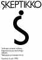
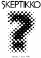
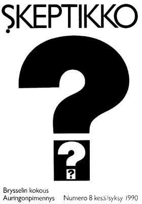
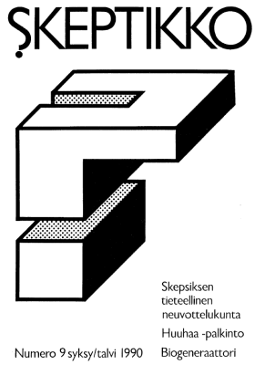

Skeptikko-lehti 1990
Ellei sinulla jo ole tietokoneellasi pdf-muodossa olevan tiedoston lukemiseen tarvittavaa
Acrobat Reader -ohjelmaa, saat sen ladattua maksutta tästä kuvakkeesta:

Skeptikko on Skepsis ry:n neljä kertaa vuodessa ilmestyvä jäsenlehti. Tästä verkkoversiosta löydät koko lehden sisällön PDF-muodossa.
 Skeptikko 6, talvi 1990
- Nils Mustelin: Huijarit, taikurit ja rajatiedon uskottavuus
- Heikki Räisänen: Vanhojen tekstien käytöstä ja väärinkäytöstä
- Pekka Roponen: Hypnoosi ja parapsykologia
- Nils Edelman: Atlantis
- Hannu Karttunen: Taikavarpu ja kuunpimennys
- Matti Virtanen: Sanomalehtikatsaus
- Skepsiksen tiedotuksia
 Skeptikko 7, kevät 1990
- Nils Mustelin: Terveyden kaupparatsut
- Timo Kaitaro: Skeptikko meedion matkassa
- Matti Virtanen: Tärkeintä on, ettei hoidosta ole haittaa
- Matti Virtanen: Lehdistökatsaus
- Toimintakertomus vuodelta 1989
- Tulevia tapahtumia
- English summary
 Skeptikko 8, kesä 1990
- Hannu Karttunen: Ja pimeys tuli
- Nils Mustelin: Koominen ja kallis juttu
- Hannu Karttunen, Matti Virtanen: Skeptikkojen kokous Brysselissä
- Kari Saari: Spermainen sunnuntai Sipoossa
- Markku Javanainen: Skeptistä keskustelua tietokoneverkoissa
- Lehdistökatsaus
- Lukijoilta
- Skepsiksen tiedotuksia
 Skeptikko 9, syksy 1990
- Nils Mustelin: Okkultismi ja Steiner-koulut
- Veijo Saano: Lääketieteen pieni ihme: biogeneraattori!
- Timo Kaitaro: Paranormaaleja ilmiöitä vähemmän skeptisesti
- Skepsiksen Huuhaa-palkinto
- Timo Kaitaro: Tieteeellisen neuvottelukunnan kokous 24.11.90
- Matti Virtanen: Uutisia
- Lukijoilta
- English summary
Kaikkien artikkelien © Copyright 1990 Skeptikko-lehti ja kirjoittaja.
Kirjoitukset vapaasti siteerattavissa ja levitettävissä ei-kaupallisiin tarkoituksiin, lähteeksi mainittava kirjoittajan lisäksi Skeptikko-lehti numeroineen.


{kind=link}
{kind=link}
{kind=link}
{kind=link}